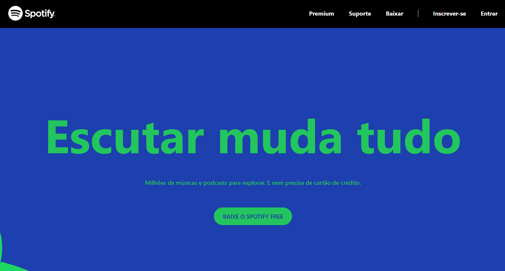

<mat-card>
  
  <div>
    <mat-card-title>Spotify Clone</mat-card-title>
    <mat-card-content>
      <p>
        Spotify Clone, uma simples aplicação web onde o intuito é apenas mostrar
        o poder de estilização do tailwind css.
      </p>
      <a href="" target="_blank">Ver projeto</a>
      <a href="" target="_blank">Repositório</a>
    </mat-card-content>
  </div>
</mat-card>
